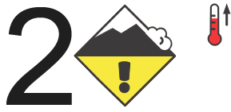
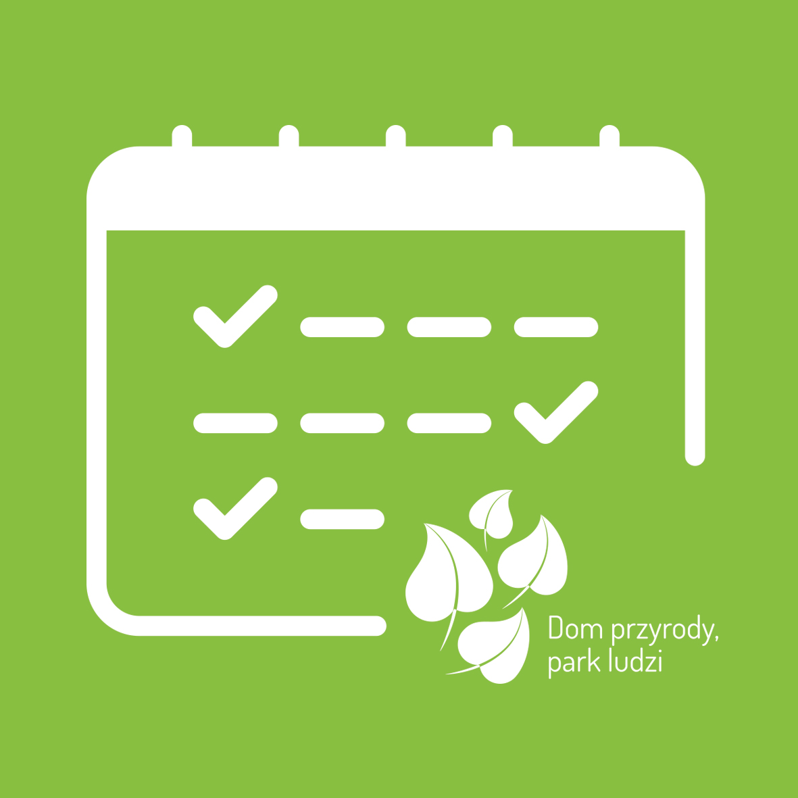

Zakopane

Komunikat lawinowy
Komunikat turystyczny
Warunki do uprawiania turystyki w Tatrach są niekorzystne. Pada marznąca mżawka i jest ślisko. W części reglowej znaczne odcinki szlaków są już bez śniegu, mogą być...
zobacz więcejWolontariat
Nauka
Sklep
Centrum Edukacji - REZERWACJE
Tatry w pigułce
Biblioteka